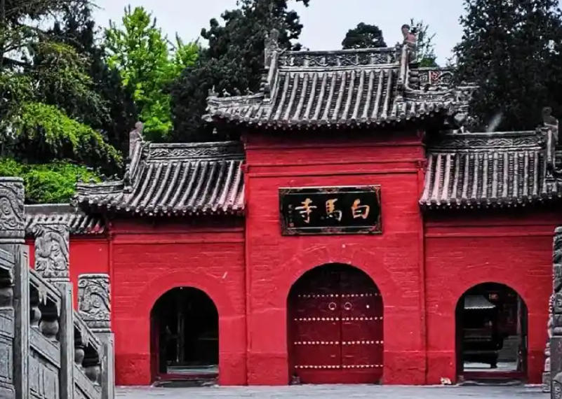
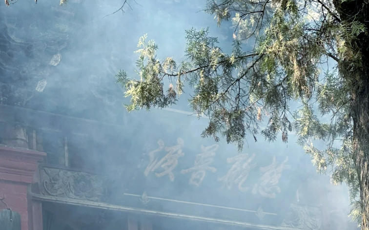
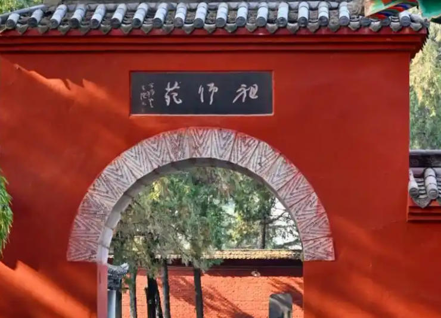

-
 0379-8888-8888
0379-8888-8888
- |
- Luoyang Tourism
0379-8888-8888



The Longmen Grottoes are a UNESCO World Heritage Site and one of China's most spectacular ancient art treasures. Carved into the limestone cliffs along the Yi River starting from the Northern Wei Dynasty in 493 AD, the site spans over 1,000 meters and contains more than 2,300 caves and niches, 100,000 Buddhist statues, and 2,800 inscriptions. The crown jewel is the 17.14-meter-tall Vairocana Buddha, believed to be modeled after Empress Wu Zetian of the Tang Dynasty. Walking along the cliffside paths, visitors can witness the evolution of Chinese Buddhist art across five dynasties, making it an unparalleled journey through 1,500 years of artistic and spiritual devotion.

The White Horse Temple, founded in 68 AD during the Eastern Han Dynasty, is widely recognized as the first Buddhist temple built on Chinese soil and the cradle of Chinese Buddhism. According to legend, Emperor Ming dreamed of a golden man flying from the west, prompting him to send monks to India. They returned with Buddhist scriptures carried by a white horse, which gave the temple its name. The temple complex features magnificent halls including the Mahavira Hall, the Hall of Heavenly Kings, and the ancient Qiyu Pagoda. Today, the temple grounds also house international Buddhist temples built in the architectural styles of Thailand, India, and Myanmar, symbolizing the global spread of Buddhism from its Chinese birthplace.

The Luoyang Peony Garden is the crown jewel of the city's 1,500-year peony cultivation heritage. Every April, during the annual Luoyang Peony Festival, the garden transforms into a breathtaking sea of color with over 1,000 varieties of peonies spanning 1,500 acres. The peony, known as the "King of Flowers" in Chinese culture, has been beloved since the Tang Dynasty when Empress Wu Zetian supposedly banished all flowers except the peony to the capital Luoyang. Today, the festival attracts millions of visitors who come to witness the extraordinary blooms in every shade imaginable — from delicate pinks and pure whites to deep crimsons and rare blacks. The garden also features traditional pavilions, lotus ponds, and cultural performances that celebrate Luoyang's enduring floral legacy.